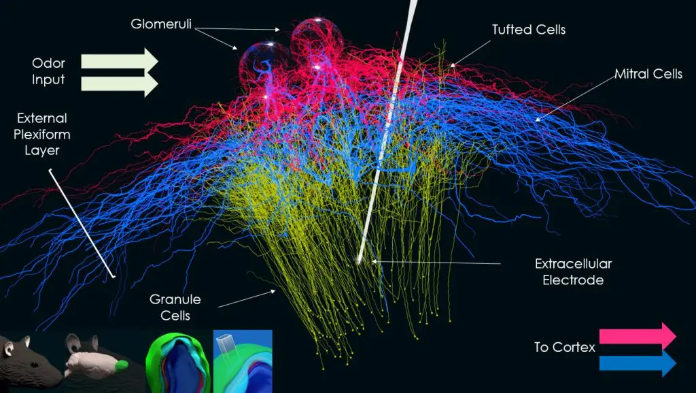

Olfactory Bulb Model Documentation¶
This is the documentation site for the olfactory bulb model developed by Justas Birgiolas Ph.D.
Model Website: https://olfactorybulb.org/
Documentation (this site): https://docs.olfactorybulb.org/
Source Code Repository: https://github.com/justasb/olfactorybulb
Pre-built Docker Images: https://hub.docker.com/repository/docker/jbirgio/olfactory-bulb
Ph.D. Dissertation Describing the Model: Towards Brains in the Cloud: A Biophysically Realistic Computational Model of Olfactory Bulb
The model and related BlenderNEURON model editing tool were developed in collaboration with researchers at the ICON Lab at Arizona State University.
Citation¶
If you use this model in your project, please cite it as follows:
@phdthesis{birgiolas2019towards,
title={Towards Brains in the Cloud: A Biophysically Realistic Computational Model of Olfactory Bulb},
author={Birgiolas, Justas},
year={2019},
school={Arizona State University}
}